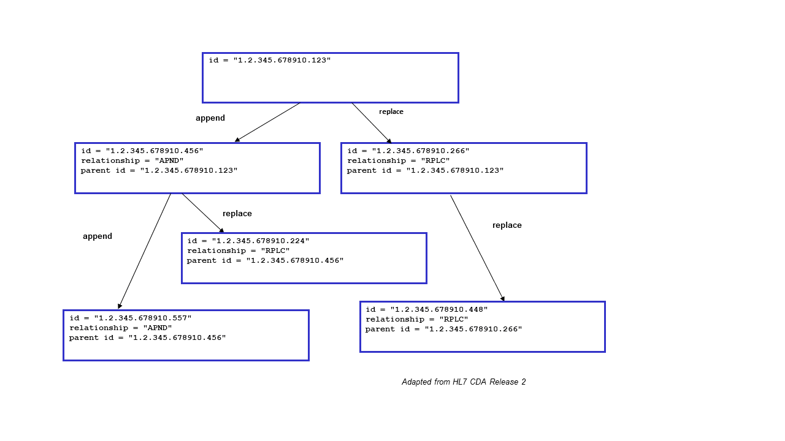

Appendix K: XDS Concept Details
An XDS Document is the smallest unit of information that may be provided to a Document Repository and be registered as an entry in the Document Registry.
An XDS Document is a composition of clinical information that contains observations and services for the purpose of exchange with the following characteristics: Persistence, Stewardship, Potential for Authentication, and Wholeness. These characteristics are defined in the HL7 Clinical Document Architecture Release 1 specification.
An XDS Document may be human and/or application readable. In either case, it shall comply with a published standard defining its structure, content and encoding. IHE intends to define content-oriented Integration Profiles relying on such content standards to be used in conjunction with XDS.
Furthermore:
- When submitted for sharing, an XDS Document shall be provided to the Document Repository as an octet stream with an associated MIME type.
- When retrieved through the Retrieve Document transaction, an XDS Document shall be unchanged from the octet stream that was submitted (full fidelity repository).
Note: An XDS Document may be a MIME multipart document (e.g., an HL7 CDA as its first part followed by attachments as files). The first part of the multi-part contains the primary part of the document; other parts are direct attachments to the primary part. The Document Repository handles this multi-part data set as an “opaque entity”. The Document Repository does not need to analyze or process its multi-part structure nor the content of any parts in the context of the XDS Integration Profile.
Note: An XDS Document may be retrieved using alternate methods using document specific retrieval methods. Such optional capabilities are not provided in the current specification of XDS, but are possibly candidates for addition as future options to the XDS Profile.
- An XDS Document shall be associated with metadata defined by the Document Source. This metadata information shall be placed by the XDS Registry in an XDS Document Entry, and is used for query purposes by XDS Consumer Actors.
- The XDS Integration Profile manages XDS Documents as a single unit of information; it does not provide mechanisms to access portions of an XDS Document. Only the Document Sources or Document Consumers have access to the internal information of the XDS Document.
- An XDS Document is globally uniquely identified, so that no two XDS Documents with different content shall bear the same Unique Identifier. This identifier is unique across all XDS Affinity Domains, which allows potential merger of XDS Document Repositories from different domains, or exchange of XDS Documents between Clinical Affinity Domains, if so desired.
- The XDS Document Registry shall maintain a single document entry for each XDS Document stored in a Document Repository. Duplicate copies of the same XDS Document (with the same unique identifier) may be stored and registered. Registration of an XDS Document with the same unique identifier but a different content is rejected.
- This Integration Profile specifies the metadata required for each XDS document registered in the Document Registry. It is the responsibility of the Document Source to ensure that the XDS Document metadata reflects the actual content of the associated XDS Document. Neither the Document Repository nor the Document Registry checks this consistency.
- The Document Source maintains the following responsibilities over the XDS Documents it has registered:
- It has rights to change the status of any of these Documents from “approved” to “deprecated” or to delete them outright.
- It has rights to submit an XDS Document with a “Parent Relationship” of replacement (“RPLC”) for one of its previously submitted document.
Note: For example, in DICOM, where the document identity does not change even though its internal patient metadata may have been updated, the Document Source would submit an updated DICOM Document as a replacement for the existing one.)
XDS Affinity Domains should have policies and procedures to provide patient access to these operations where necessary. For example, in certain regions, patients may request the removal of documents from the EHR-LR. The Registry and Repositories implementations should be ready to support these local operations although there are no IHE transactions defined at this time.
K.2 Concept of an XDS Affinity Domain
An XDS Affinity Domain is made of a well-defined set of Document Repositories and Document Consumers that have agreed to share the clinical documents. An XDS Affinity Domain has a number of properties defined:
- An XDS Affinity Domain does not deliver care. Only the EHR-CRs belonging to an XDS Affinity Domain as Document Sources and Consumers do.
- An XDS Affinity Domain is managed by a single Document Registry.
Note: A distributed registry approach will be considered as a future and separate Integration Profile. For Document Source and Document Consumer Actors, the perception of a single Document Registry hides the complexity of a distributed registry.
- It includes any number of Document Repository Actors (a distributed configuration is the default, however, a centralized configuration with a grouped Registry/Repository is also supported).
- It contains an explicit list of Document Consumer and Document Repository Actors that participate in document sharing. The addition of a Document Repository or Document Consumer is an administrative task that requires involvement of authorities maintaining the Registry and Repositories.
- There is a chain of trust established between the users (healthcare staff) in each EHR-CR and the XDS Affinity Domain.
- Document Repositories and Document Consumers may belong to more than one XDS Affinity Domain and share the same or different documents. This is an implementation strategy and will not be further described.
- The XDS Affinity Domain supports a primary Patient Identification Domain that is used by the Document Source and Consumers to communicate with the Document Registry. When Document Sources and Consumers in the XDS Affinity Domain belong to different Patient Identifier Registration Domains, the Document Source and Consumers must cross-reference their own Patient Identifier Registration Domains to that of the Registry. They may use the IHE Patient Identifier Cross-referencing Integration Profile, the IHE Patient Demographics Query Integration Profile or other XDS Affinity Domain specific mechanisms for cross-referencing (see Sections E.3 and E.5).
- A Document Source may only contribute documents with Document Codes and Health Facility Codes that draw from a Vocabulary Value Set that is approved by the XDS Affinity Domain.
The XDS Integration Profile has been designed with the following limitations and principles:
- A Document may contain references to other documents in its content which are not under the management of the XDS Document Registry. Such references may be available to the EHR-CR that registered the document that includes the reference. It is beyond the scope of XDS to provide access to such documents internal to the EHR-CR.
- The XDS Repositories are not expected to perform any processing or translations on document content. Processing and translation are the responsibility of a Source EHR-CR or Consumer EHR-CR. The analysis, cross-document combination and presentation of document content are outside the scope of the XDS Integration Profile and its actors.
- The custodianship for the clinical information contained in a registered document remains with the Source of the EHR-CR. The EHR-LR offers only a “shared space” under the responsibility of each contributing EHR-CR. Through XDS, replacement or deletion of documents in the EHR-LR may only be initiated by the corresponding EHR-CR Source.
- When an XDS Document that has already been registered in the XDS Registry of an XDS Affinity Domain is resubmitted as if it was a new XDS Document with the same Document Unique identifier, this “duplicate submission” is detected by the Repository and/or Registry based on the fact that the XDS Document Unique Identifier already exists in a Document Entry. The submission request to which that resubmitted Document belongs shall be rejected in the case where the identifiers match but the actual content differs (detected by use of a hash key computed by the Document Repository at the time of submission).
In order to reduce the number of unique identifiers associated with an XDS Document, the globally unique Document Id assigned by the document source and the unique XDS Document Id used by the Repository are the same. It is strongly recommended to limit the use of the Document Entry UUID created per ebRS in order to reference the document entry for referencing internally to the encoding of the IHE transactions operations, and to encourage the use of the globally unique Document Id for all external operations (e.g., links maintained in data bases internal to the Document Source, links within documents, etc.).
The XDS Document Entry includes two separate attributes: an XDSDocument.uniqueId and XDSDocument.repositoryUniqueId. The Document Unique ID is a location independent identifier. As the result of XDS Document migration from one XDS Document Repository to another one within an XDS Affinity Domain, the repositoryUniqueId would be changed, but not the Document unique ID.
K.5 Example of Document Relationship
Figure K.5-1: Example of Document Relationships
These relationships are illustrated in the above figure. Typical scenarios are a simple replacement (e.g., XDSDocument.id "1.2.345.678910.266" replacing XDSDocument.id "1.2.345.678910.123") and a simple addendum (e.g., XDSDocument.id "1.2.345.678910.456" appends XDSDocument.id "1.2.345.678910.123"). More complex scenarios that might be anticipated include:
- Replacement of an addendum (e.g., XDSDocument.id "1.2.345.678910.224" replaces XDSDocument.id "1.2.345.678910.456", which itself is an addendum to XDSDocument.id "1.2.345.678910.123") - expected behavior would be to render the replacement as the addendum (e.g., render XDSDocument.id "1.2.345.678910.224" as the addendum to XDSDocument.id "1.2.345.678910.123");
- Addendum to a replaced document (e.g., XDSDocument.id "1.2.345.678910.456" appends XDSDocument.id "1.2.345.678910.123", which has been replaced by XDSDocument.id "1.2.345.678910.266") - expected behavior would be to render the addendum along with the replacement (e.g., render XDSDocument.id "1.2.345.678910.456" as an addendum to XDSDocument.id "1.2.345.678910.266").